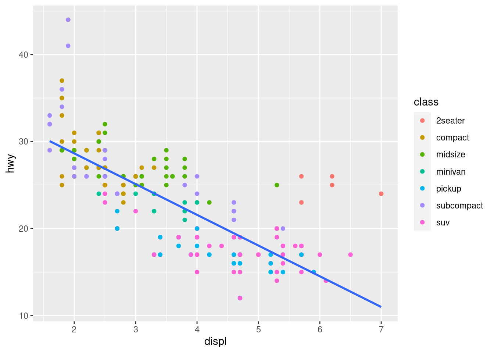

ggcheck provides functions that inspect ggplot2 objects to make it easier for teachers to check that student plots meet expectations. Designed primarily for automated grading via gradethis in interactive learnr tutorials.
Installation
You can install ggcheck from GitHub with:
# install.packages("remotes")
remotes::install_github("rstudio/ggcheck")Usage
The primary goal of ggcheck is to help tutorial authors inspect and test properties of ggplot2 plots. The examples below demonstrate how ggcheck can be used in general; for more information about using gradethis in learnr tutorials, please see the gradethis package documentation.
Suppose an exercise asks students to create the following plot of engine displacement vs highway miles per gallon ratings.
library(ggplot2)
p <-
ggplot(data = mpg, mapping = aes(x = displ, y = hwy)) +
geom_point(mapping = aes(color = class)) +
geom_smooth(se = FALSE, method = "lm")
p
#> `geom_smooth()` using formula 'y ~ x'
We can use ggcheck to test that students used geom_point()
library(ggcheck)
uses_geoms(p, "point", exact = FALSE)
#> [1] TRUEor that both geom_point() and geom_smooth() were used
uses_geoms(p, c("point", "smooth"), exact = FALSE)
#> [1] TRUEor that exactly both geom_point() and geom_smooth() were used and in that order.
uses_geoms(p, c("point", "smooth"), exact = TRUE)
#> [1] TRUESimilarly, we can test that a linear model was used for the smoothing method and the confidence interval was not displayed:
uses_geom_param(p, "smooth", list(se = FALSE, method = "lm"))
#> se method
#> TRUE TRUEThere’s a lot more that ggcheck can do. Read more in the full function listing.
Code of Conduct
Please note that the tblcheck project is released with a Contributor Code of Conduct. By contributing to this project, you agree to abide by its terms.